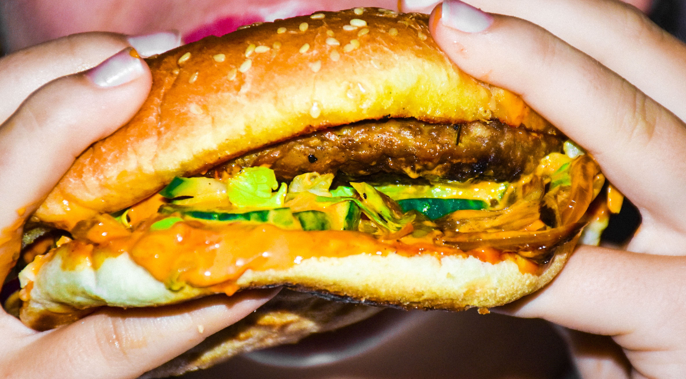
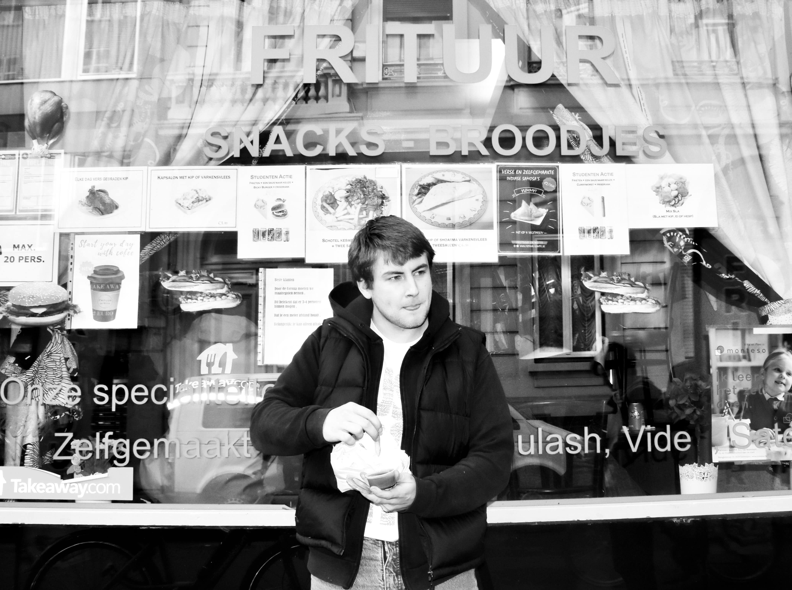
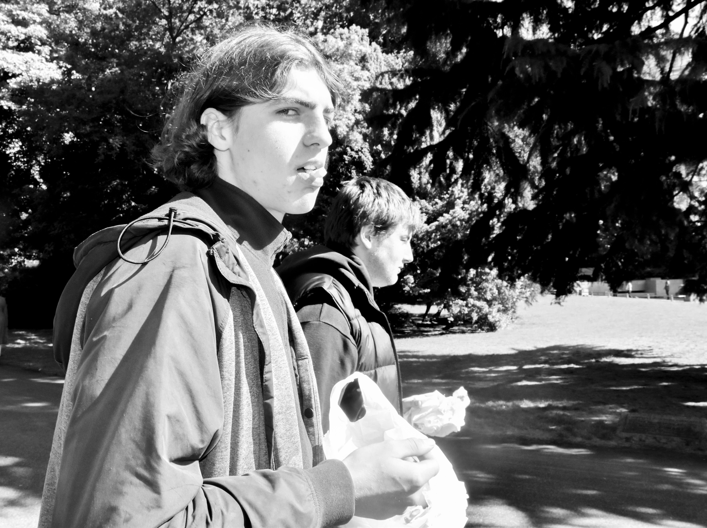

KEBAB KING

Mijn favoriete plaats. Waar ik mij nog meer thuis voel, is kebab king.
Het is niet echt een restaurant, maar toch noem ik het zo. Het eten
is het lekkerste in heel polen. Ik heb nog nooit zo een lekkere
frieten gegeten. Mijn lievelingseten is namelijk frietjes en kip. Of een
hamburger, pita etc. Als het maar van kebab king komt.

